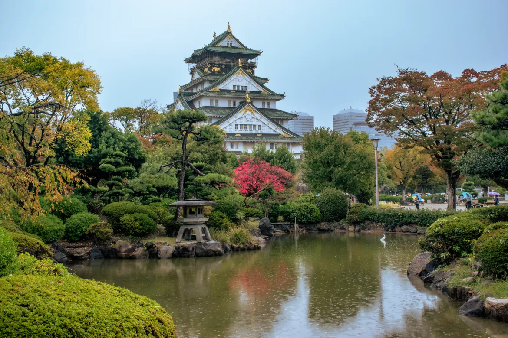

Okinawa
La región de Kanto, aparte de acoger a la metrópoli más grande del mundo, Tokio, también ofrece escapadas a la montaña y hermosas islas subtropicales

Kanto
La región de Kanto, aparte de acoger a la metrópoli más grande del mundo, Tokio, también ofrece escapadas a la montaña y hermosas islas subtropicales

Tohoku
La región de Kanto, aparte de acoger a la metrópoli más grande del mundo, Tokio, también ofrece escapadas a la montaña y hermosas islas subtropicales